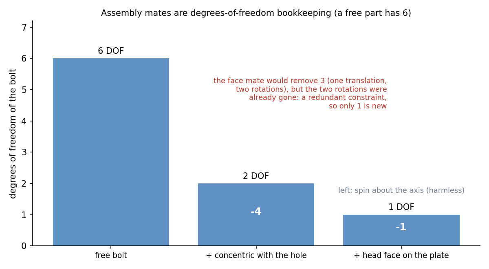

Assembly Drawings, 3D Modelling and Bills of Materials
A parametric 3-D model is built from sketches with constraints, turned into solids by features (extrude, revolve, hole, fillet), and combined in an assembly by mates that remove degrees of freedom. The assembly drawing then carries views, balloons numbered to a bill of materials; the part drawings carry the tolerances. The model, the drawing and the BOM stay linked, so change one and the others follow.
Part of Computer Aided Machine Drawing - MOC. Previous: Surface Finish, Machining Symbols and Production Drawings.
1. From sketch to part
graph LR
A["2-D sketch on a plane"] --> B["Constraints and dimensions"]
B --> C["Feature: extrude, revolve, sweep, loft"]
C --> D["Detail: hole, fillet, chamfer, pattern"]
D --> E["Part model + material"]
E --> F["Assembly: mates"]
F --> G["Drawing: views, sections, BOM"]
- Sketch: geometry (lines, arcs, circles) with geometric constraints (horizontal, tangent, concentric, equal) and dimensional constraints. A sketch is fully defined when no element can move: always aim for that (a black sketch, not a blue one).
- Features: extrude (a sketch pushed along a direction), revolve (about an axis: shafts, bushes), sweep and loft (along a path or between sections), cut versions of each, and hole wizards that carry the tap and clearance data.
- Design intent: put the base feature and the dimensions in the order that the part would change: make the thickness a parameter, hole spacing a pattern, and tie the fillet to the edge so the model survives edits. Parameters and equations drive families of parts (all bolt lengths from one table).
- History tree and suppression: the feature order matters; deleting a parent can break the children.
2. Assembly and mates
An assembly places each part with mates: constraints between faces, edges and axes. A free rigid part has 6 degrees of freedom. Each mate removes some of them:
| Mate | Removes | Example |
|---|---|---|
| Coincident (face to face) | 3 (one translation, two rotations) | head of a bolt on the plate |
| Concentric (axis to axis) | 4 (two translations, two rotations) | bolt in a hole |
| Distance, angle | 1 each | offset between faces |
| Parallel, perpendicular | 2 or 1 | orientation of a face |
| Tangent | 1 | cam and follower, cylinder on a plane |
| Fixed (grounded) | 6 | the base or frame |
Worked count: a bolt in a plate. The bolt starts with 6 DOF. A concentric mate with the hole leaves 2 (slide along the axis, spin about it). A coincident mate between the head and the plate nominally removes 3, but two of those are the rotations that concentric already removed: only 1 is new, leaving 1 (spin about the axis, which is harmless). CAD flags the redundant part as over-defined: the model still works, but redundant mates can conflict and make the assembly fail to rebuild after an edit. This is the mobility count of Mobility - Kutzbach Equation and Exceptions in three dimensions, and the redundant constraint is the same idea as a redundant link.

Assembly checks: interference detection (parts occupying the same space), clearance, motion study (do the joints move as intended), and tolerance stack-up.
Mechanisms: a four-bar is modelled with revolute (concentric + coincident) mates and one driven angle: the same linkage as in Grashof Criterion and Four-Bar Inversions; a slider-crank adds a slider mate for the piston.
3. The assembly drawing
An assembly drawing shows how the parts fit together, not how each is made.
- Views: the front view (usually a section) and as many others as are needed; exploded view to show the order of assembly; hatching in opposite directions on adjacent parts (Sectional Views and Hatching Conventions); bolts, shafts and keys unsectioned.
- Balloons (item numbers): a circle with a leader to each part, in a clockwise or counter-clockwise order, aligned in rows and columns; the number refers to the BOM.
- Dimensions: only overall sizes, fits between mating parts (Ø25 H7/g6), and the key assembly dimensions: no detail dimensions.
- Title block and BOM (parts list) at the bottom right of the sheet.
4. The bill of materials
A BOM lists every part with one row per distinct part:
| Item | Part number | Description | Qty | Material / standard |
|---|---|---|---|---|
| 1 | FC-01 | Flange half-coupling, Ø25 H7 bore | 2 | C45 steel |
| 2 | — | Key 8 × 7 × 30 | 1 | IS 2048, C45 |
| 3 | — | Hex bolt M10 × 50, grade 8.8 | 4 | IS 1364 |
| 4 | — | Hex nut M10 | 4 | IS 1363 |
| 5 | — | Washer 10 | 8 | IS 2016 |
Order: assemblies first, then parts, or by item number; standard parts (bolts, nuts, washers, bearings, keys) are listed by designation, not drawn individually. The BOM is generated from the assembly model, so the quantities cannot disagree with the drawing; mass and cost roll-ups come from the same list.
5. A good model, a good drawing
- Model the function first (the datums, the mating features); add cosmetic detail last.
- Name parts and features meaningfully; use standard libraries for fasteners.
- Draw the part drawing from the part model: dimensions come from the sketch (driven), tolerances and finishes are added as annotations (Limits, Fits and Tolerances, Surface Finish, Machining Symbols and Production Drawings).
- Keep one model: assembly, part drawings and BOM follow its changes (revision control).
- Leaving sketches under-defined: they move unexpectedly when dimensions change.
- Over-defining mates (redundant or conflicting): the assembly will not rebuild.
- Dimensioning an assembly drawing with detail sizes.
- Listing the same standard part under two item numbers.
- Hatching a bolt or a key in the assembly section.
Predict first: two plates joined by a bolt and nut. How many DOF has the nut after being mated concentric with the bolt?
2 (slide along the axis and spin about it): concentric removes 4 of 6. A coincident mate between the nut face and the plate removes 1 new DOF (the slide); the spin remains until a friction or torque model is added.
Why are balloons numbered to the BOM rather than labelled with the part names?
The number is unambiguous and short, the BOM carries the description, quantity and standard; changing a part's name or supplier changes one BOM row, not every view.
6. Connections
- Mobility - Kutzbach Equation and Exceptions and Kinematic Pairs, Links and Chains — mates are joint constraints; redundant constraints appear in both.
- Screw Threads and Threaded Fasteners, Keys, Rivets and Welds — the standard parts in the BOM.
- Jigs and Fixtures - The 3-2-1 Location Principle — fixing six DOF with six point contacts, the manufacturing counterpart of mates.
- Introduction to Machine Design - MOC — the sized shaft, key, gears and bolts that are modelled and listed here.